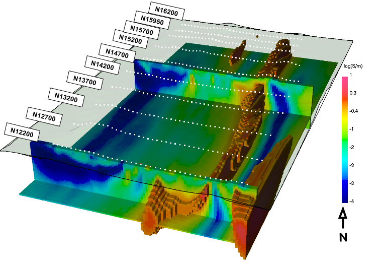
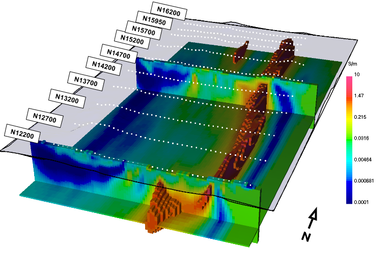
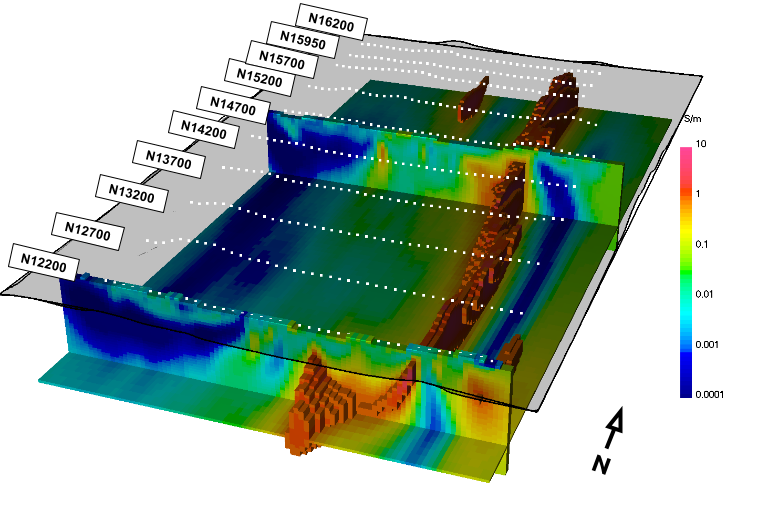
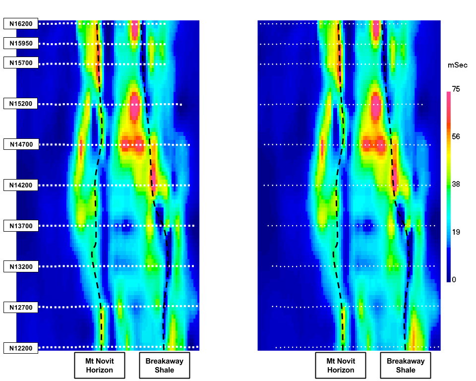

The main lesson is examining the interesting conductor at the south-east edge
of the model as seen in Fig. 461. The feature is
present in the original inversion in Figures 4a and 5a of Rutley et al
[ROS01]. Given the known geologic structure and placement of the
body at the edge of the data, the conductor may be an artifact of the
inversion. The most unfortunate aspect of the conductor is in fact its large
conductivity values that detract from the recovered Breakaway shale. We show
the testing of the inversion artefact hypothesis below.

Fig. 461 The initial 3D DCR inversion recovered model. The south-east conductor
reaches conductivity values similar to that of the Breakaway shale.
In order to assess the validity of the conductor, we change the initial
reference model from the inversion from a 0.04 S/m normal
space to a modified version of the recovered model. The goal is to see if the
data force the solution to deviate from the reference model. The zone east of
the resistive feature (i.e., East Creek volcanics) is set back to 0.4 S/m
(Fig. 462). The data were re-inverted with the new
reference model also set to the initial model. One interesting observation was
that simply removing the conductor had an initial misfit of twice the desired
misfit. The recovered model still required a conductor, but one at much less
conductivity (Fig. 453). The conductor now spans two lines
and is removed from the third and fourth lines.

Fig. 462 The conductivity reference model after the conductor to the southeast was
removed and replaced with 0.4 S/m.

Fig. 463 Sections through the recovered conductivity model and a volume rendered
image of conductivities above 1 S/m. The topographic surface and electrode
locations (white dots) are shown for reference.
In this case study, multiple physical properties are important. Therefore, we
carry out the 3D IP inversion for thoroughness. The new recovered conductivity
model is used for the inversion. The recovered chargeability models with and
without the conductor are shown in Fig. 464. There
are some subtle differences between using the different conductivity models,
but nothing that would affect the final IP interpretation. This result was to
be expected because the initial inversion did not put any chargeable material
in the conductor.

Fig. 464 : Plan-view sections through the recovered chargeability model (left) with the initial conductivity model and (right) the final conductivity model. Due to the lack of recovered chargeability where the large southeast conductor was located, the final interpretation of this physical property did not change.